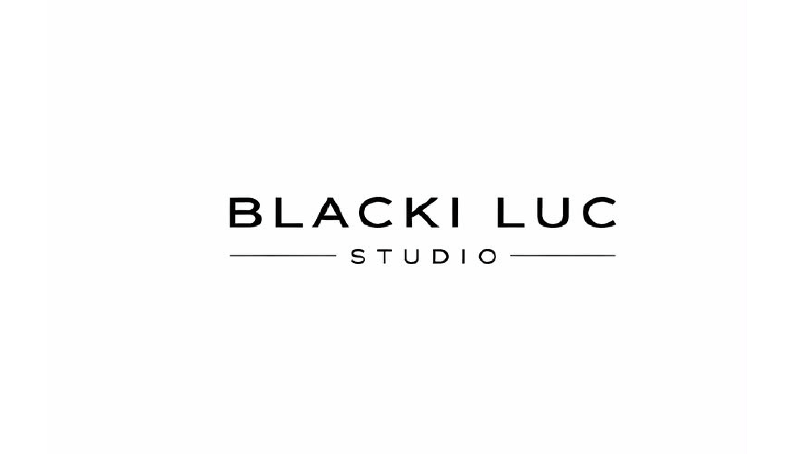

✂️ Haarschnitt
27 €Herrenhaarschnitt
45 min
Ich bin Nico Lucas, Friseurmeister und Gründer von Blacki.luc-Studio. Seit über sechs Jahren stehe ich für moderne Herrenhaarschnitte und präzise Bartschnitte. Mit meisterlichem Handwerk, individueller Beratung und einem hohen Anspruch an Qualität und Perfektion sorge ich dafür, dass jeder Kunde einen Look erhält, der zu seiner Persönlichkeit passt. Durch regelmäßige Weiterbildungen und den Blick auf aktuelle Trends entwickle ich mein Handwerk kontinuierlich weiter, um dir jederzeit moderne Techniken und höchste Qualität bieten zu können. In einer ruhigen und familiären Atmosphäre kannst du dich entspannen und darauf vertrauen, dass jedes Detail stimmt.
Kontaktiere mich einfach über Instagram per DM oder über WhatsApp und teile mir mit, welche Dienstleistung du buchen möchtest. Gemeinsam finden wir einen passenden Termin.
@blacki.luc_studio +49 1799320327Derzeit nur Barzahlung möglich! Aktuell besteht vor Ort keine Möglichkeit, die Haare zu waschen. Ich bitte dich daher, mit sauberen Haaren und möglichst ohne Stylingprodukte wie Gel, Wachs oder Haarspray zum Termin zu erscheinen. So kann ich das bestmögliche Ergebnis erzielen.
Herrenhaarschnitt
45 minBart trimmen + rasieren mit Maschine
20 minHerrenhaarschnitt + Bart trimmen + rasieren mit Maschine
60 minBitte sage deinen Termin mindestens 24 Stunden im Voraus ab. Bei Nichterscheinen oder kurzfristigen Absagen wird die gebuchte Dienstleistung beim nächsten Termin berechnet.
Ferdinand-Braun-Str. 3
89407 Dillingen an der Donau
Nach Vereinbarung